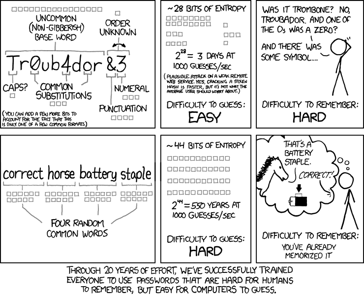
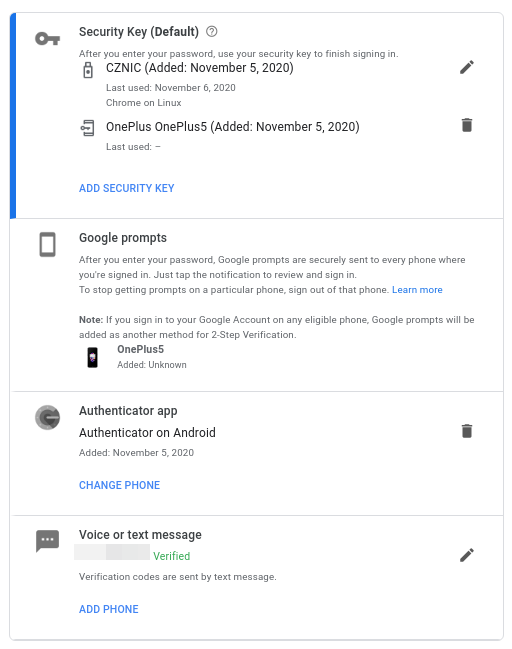

Basic security awareness
MayaData is a storage company, we help companies to store their data. Our users expect us to keep security as one of the key design principles. We also have access or store data about our customers, partners and contributors. No matter what kind of data it is, it's always the best to pretend that all the data are sensitive and one should treat them with special care, because we care about all the people's data. The way how one should care about the data has also been well formed in past years into set of rules hidden under well-known shortcut GDPR.
Basic set of principles to follow to stay on secure side
To stay on the safe side and minimize the surface to any kind of attacks or data leakage, you may find useful the following set of rules (it's split to simple categories for better memorization).
Environment
- Always treat the environment you work in as insecure. We work in so called All remote setup and the working environment cannot be protected centrally. It's each one of us responsibility to behave responsibly and treat all your steps with special care.
- Follow the least privilege principle. From time to time you'll find out that you weren't given full access to the technology you work with. It's not about the fact that you're not a trusted person, but it's about leaving the opportunity window less open to the attacker, who may get in possession of your credentials (no matter how (s)he did that).
- Do not leave your unlocked computer unattended. Same applies for your apartment right? You're not leaving doors open, so why would you leave the computer? Most of the time there's a magic key combination
Win+Lto lock your computer (the key combination may vary depending on your setup). - Shout out loud in case of any stolen device or you feel you were the victim of cyber attack that is related with your work for MayaData! The sooner the better!
- for security related reports there's security [at] mayadata.io
Hardware
- Omit the usage of devices made by unverified manufacturers aka cheap Chinese whatever tend to be full of pre-installed malware, that can start sending company data to 3rd parties. Same applies for example for USB sticks you found or were given.
- Always encrypt your data in your HW. Especially the hard drives in your work computer. For multi-OS installations, it's better to encrypt each OS with it's own key, but you may use HW encryption provided by the manufacturer.
- Treat all your devices the same. Even your iPhone or your Alexa are prone to multiple different kind of attacks, it's always best to use such devices as little as possible for work purposes (the best is never), or use the same security principles as you use for your work computer.
- Always wipe your data once you pass your device to someone else. You're passing your device the service-man, returning borrowed or selling the device - always wipe the data that are present in your device. Should you need to restore the data, make a proper backup.
Network
- Do not connect to insecure WiFi networks. Unless you really really have to. By using the open WiFi network you're removing one additional layer of security on the way to your data and making it easier to sniff your connections to others in closest surroundings.
- Do not let untrusted (sometimes called smart) devices to connect your WiFi networks. So called IoT devices floods the world with rapid speed. The price for the rapid spread is the absence of proper implementation of security measures. Hacked IoT devices can become a gateway to your network only a single step to your data in your computer.
Software
- Always encrypt wherever you can encrypt all the connections you make against the outside world. Do not trust unprotected paths, because there always can be somebody else listening and waiting for your data.
- Do not pass the data through the insecure channels without additional layer of data encryption. This applies especially for the email communication, where one may tend to send the results of his computation as an email attachment.
- Prefer 2FA authentication wherever possible and make it harder to steal your credentials.
- Use different password for each site. One rule them all applies even for passwords. By using different password for each you're giving an access to only a single site instead of all of them in case some will steal your credentials. With a password manager like bitwarden or for offline lovers pass you don't have to remember any of them and they also solve problem of generating strong passwords and storing them securely.
- Use strong passwords doesn't mean you need to put every weird character into it: 
- Never share passwords and never let them lay around in plain text.
- Use strong ciphers for your keys or certificates. Applies for all different types of keys, but mostly we're talking about SSH keys and communication / encryption certificates. You may not be secured even with 2048bit RSA on these days.
- Always use the latest updates for the software installed on your computer, especially the security updates are important to be present.
- Do not expose (let listen) services without further firewall limitations on your work computer. Even though you think you're safe on local network and you can expose your docker daemon, because you don't have public IP, don't do that without additional firewall.
- BACKUP! Encrypt the backup data and verify that it's possible to restore the data, periodically.
- Do not download / run unverified apps.
- Beware of browser extensions. Web browser became one of the most used applications today and may contain a lot of personal data. Extensions improves the browser functions, but even the least expected extension can be harmful and send your data elsewhere without further notice.
- Use multiple different browsers. One for private work and one for your job work. Or at least different profile folder for each part of your work. This is more or less for your own security, but people tend to visit broad range of different sites within their free time (games sites etc.) that they won't visit withing the work time. These sites tend be compromised and may try to steal the data from your browser. Splitting it into multiple profiles, you're limiting the attack surface.
- Beware of phishing / s(p|c)am etc. Even though you're an expert, it's better to be cautious. You may read more at Gitlab's handbook about some examples.
- Beware of clicking the links in the emails / on the web pages. It's not that hard to put a different path under the visible text. Hover over it and see the bottom left side, your email client / browser will show you the real path you'll be take to.
How to 2FA
2FA (or two factor authentication, or two step verification) refers to use of an additional secret in conjunction with your password. There are multiple ways how to implement 2nd factor. These can be hardware tokens (such as Yubikey), time based one-time-passwords (TOTP, Google Authenticator, Authy, also a lot of password managers have support for it) or even your phone (e.g. Google Prompts).
Adding your additional factor is typically trivial, we put together list of the most frequently used services:
- Google account or just go to Your Google Account;
- GitHub account;
- Amazon Web Services (AWS);
Many services will also allow multiple different factors to be configured. For example, this is list of my other factors configured for Google Account: 
In case service or you don't have or don't want to have multiple different 2nd factor configured, services typically allow generating backup codes that can be used (one time each) instead of / as the 2nd factor. In that case it is recommended to generate those and store them securely (password manager) in case you lose access to your 2FA device.
Summary
The basic rule of thumb is to be CAUTIOUS, always and anytime! Even though it may sound stupid, if you spot something suspicious, like the fact that your WiFi authentication disappeared suddenly, it may mean that someone else replaced it with his own evil twin version to sniff your credentials.
Don't be afraid to ask, if you are unsure. It's better to ask stupid question then be sorry for not asking it.
These are just a bunch of basic rules that everyone should follow. For more inspiration, take a look at Gitlab's handbook security section or search the internet for other sources (for example advanced reading compiled by NIST).